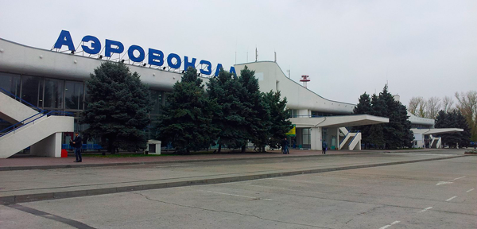
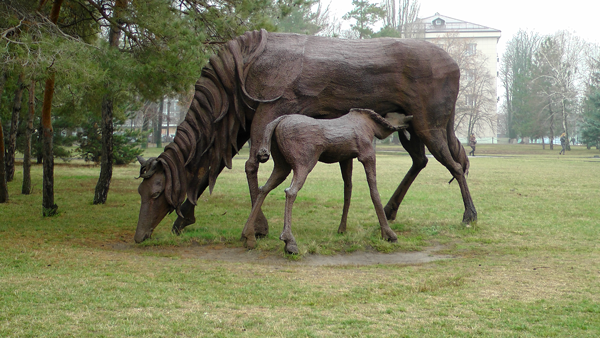
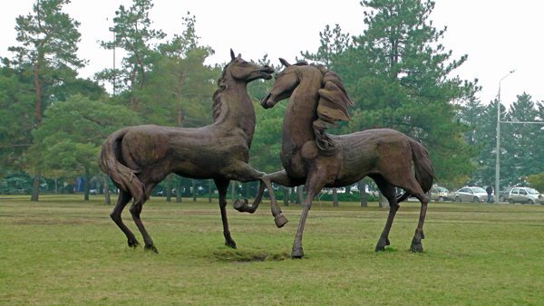
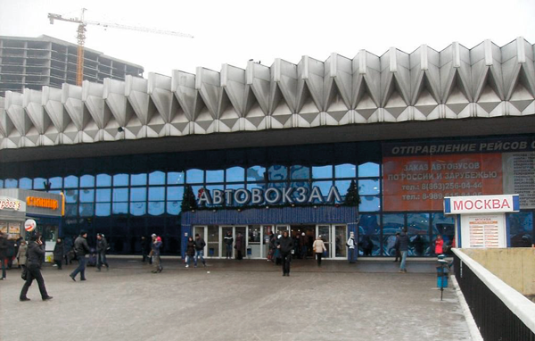
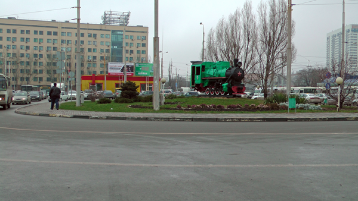
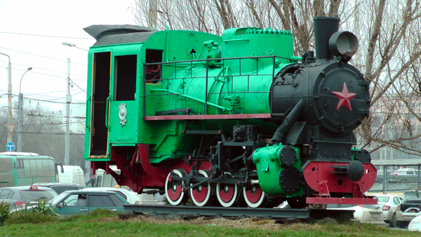

21.12.2015 odlet z Prahy
From: Prague (Czech Republic) - Airport: Ruzyne Arpt - 0:50
To: Moscow (Russian Federation) - Airport: Sheremetyevo Arpt - 5:25
Čas letu - 2:35
21.12.2015 odlet z Moskvy
From: Moscow (Russian Federation) Airport: Sheremetyevo Arpt - 9:35
To:Rostov (Russian Federation) Airport:Rostov Arpt - 11:35
Čas letu - 2:00
Letiště Rostov na Donu (rusky: Росто́в-на-Дону)
  Autobusem MHD jsem dorazil do autobusového nádraží
  Koupil jsem jízdenku do Doněcka (na pokladně vám lístek prodají pouze na pas). Na hraničním přechodu mě pohraniční služba Doněcké Lidové Republiky vysadila z autobusu. Žádného člověka, který tam jede, a nemá trvale bydliště v DLR, tam nepouští. V případě, že mate rodinu v DLR, musíte u sebe mít telefonní číslo svého příbuzného, kterému pak zavolají přímo ze hraničního přechodu. Když příbuzný potvrdí a bude znát vaše jméno, příjmení a další podrobnosti, můžete pokračovat v jízdě.
Já zůstal na hraničním přechodě, a autobus pokračoval v cestě. Vysvětloval jsem, že jedu s humanitární misí od jména přátel s ČR, ale nemohl jsem jím dokázat ke komu konkrétně jedu, tak mně poslaly zpět do Ruska. Zůstal jsem na neutrálním teritoriu, a nechtěl se vracet.
Nebyl tam internet, takže jsem nemohl najít telefonní číslo na Humanitární Batalion Novorossie. Poté jsem zavolal manželce, ona zjistila číslo telefonu a zavolala na HBN. Když už jsem měl telefonní číslo na našeho kolegu z HBN, došel jsem za důstojníkem pohraniční služby DLR, a předal mu sluchátko. Po rozhovoru mi bylo dovoleno jet do Doněcka. Z Ruska se náhodou vracel do Doněcka opolčenec. Vyzvednul si samopal, který nechávají na hraničním přechodě při cestě do Ruska. Důstojník pohraniční služby opolčenci vysvětlil, kdo jsem, kam a s jakou misi jedu do Doněcka. Za chvíli už jsem seděl v autě na cestě do Doněcka. Úspěšně jsme dorazili do Doněcka, i přestože po cestě byla hustá mlha.
Na druhý den jsem se sešel s Romanem, který zastupoval HBN, a je také asistentem poslance. Měl na starosti zajistit dárky dětem k silvestru. Byl sestaven plán a rozhodnuto o dárcích. Dalšich několik dní jsme jezdili a nakupovali vše potřebné.
Z účtu SOS DONBASS byla vybraná částka 106 500 RUB (18.12.2015)
66 052 500 - dárky (500 ks)
25 081 - ovoce
2 855 - potraviny + finanční pomoc Valentine
7 500 - zakoupeni 150 metrů horolezeckého
lana
5 012 - zakoupení pohonných hmot (rozvoz dárků)